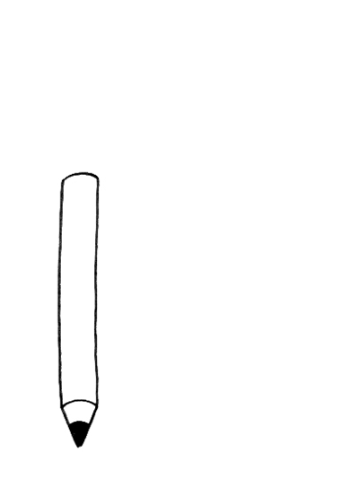

换主题啦！告别Metro，迎来百度efe
免不了灌水。刚刚发了牢骚，咋么P大点事也要发一篇文章？
此话有理。不过转念一想，谁看呐！况且独立个人博客的意义何在？
博客标题。
一开始是“多云转晴hower”，后来是“Hower's Blog”，现在又改回了“多云转晴hower”。
Hower只有多云转晴hower一个人是事实。
Hower称呼何来？how.gs这个域名作怪。这确实是一个不错的域名，但又是一个有风险的域名，因为它是国别域名，谁都无法保证它有多长时间的可用性，以及续费价格是否可以稳定。指不定哪天，就不存在了。聊以情怀。
索引问题。不精通SEO，但是如果用“Hower' Blog”这么一个全英文的标题，是不会受本土居民以及搜索引擎待见的。
友情链接。不必要更名。
博客主题。
由原先系统自带的“新鲜人”的“Metro”主题，换成“老白”的“ydefe”仿百度http://efe.baidu.com主题。
Metro确实有很多难以容忍的缺点。固定的像素布局感觉老套落后于潮流，颜色搭配也很难调剂，包括背景图，虽然它也有优点。
efe既然是仿百度的，从某些审美角度就可以忽略N多问题，并且实现一开始没有实现的响应式。虽然它也有缺点。
内容展示。
由主题更改带来一些展示内容的更改。
目前没有文章阅读量、评论数目和网站访问量统计，因为模板本身没有。Metro模板文章相关的统计是自带的，站点访问量是后加的。至于现在的efe，没有添加这些功能的打算。没有辣眼睛的数据统计何尝不是一件好事？
后来：保留了网站页面加载数目统计，在每个页面的最下面一行。因为我喜欢大数据。至于单个文章阅读量，还在考虑。
后来：稍微折腾了一下下Font awesome，把该有的统计都加上了。虽然辣眼睛，不过把数据明明白白摆出来，总好过什么都不知道，想看看不上。
efe的列表展示效果不尽人意，没有Metro条理、清晰。暂时忽略。还在考虑以前的文章要不要重新排版？
1313这么些，说什么优点缺点？
并没有褒贬的成份在里面。谁又能说PHP不是世界上最好的语言？
那你怎么不自己开发个模板？
不会。
主题版权。
可能“不道德”地去除了版权。个人观点，影响版面内容。不是版面问题，多这么一句外部内容总感觉不放心。也看的出来作者对于这句版权稍上心，文件里面用了不少缩进。原版权内容：
Powered By Z-BlogPHP. theme by letterpress
如果侵权（应该没那么严重），留言，即刻更改。
